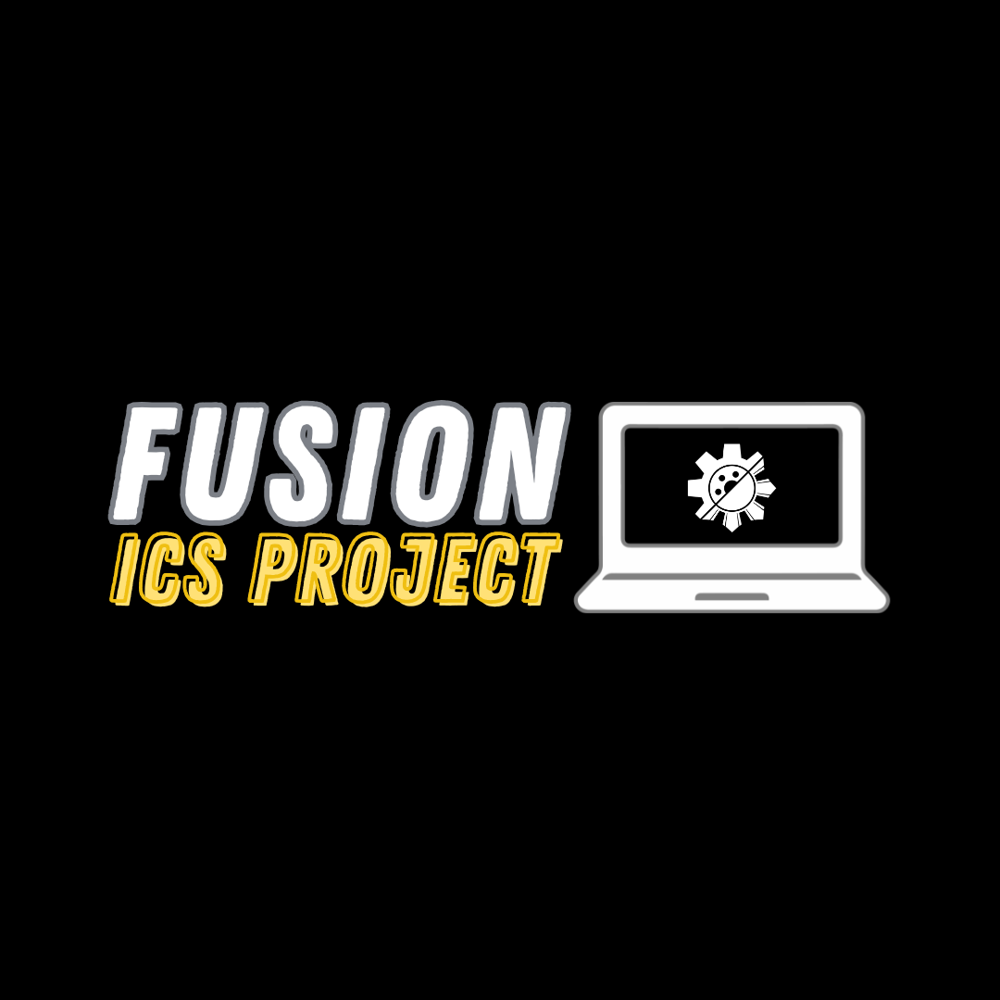
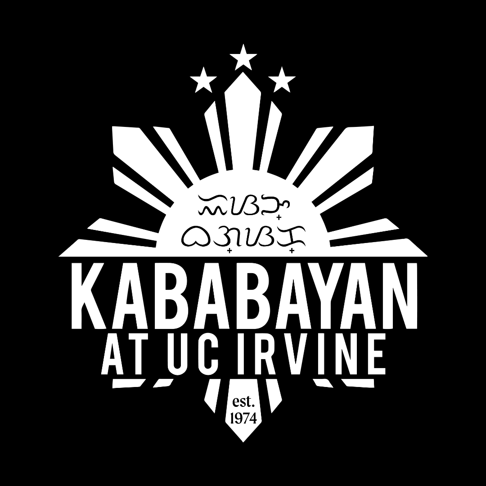

bianca cataniag
informatics @ uc irvine, creative in ui/ux design
seeing design in all walks of life
current involvements

Design Advisor @ FUSION ICS Project 2026-2027
setting up deadlines, workshops, and providing guidance for designers amongst 5 different teams with 2 co-advisors and 3 project directors to ensure that deliverables met project criteria and teams have easy access to aiding resources when needed.

Senior Coordinator @ Kababayan at UCI's 48th PACN
choreographing, teaching, and directing a performance with two co-coordinators to be executed by over 100 students at one of Southern California’s biggest cultural nights.
previous involvements
Publicity Director @ FUSION at UCI
Product Design Lead @ FUSION ICS Project 2025-2026
Designer @ Kapwa Codefest 2025
Website Designer @ FUSION at UCI
UI/UX Designer @ FUSION ICS Project 2024-2025